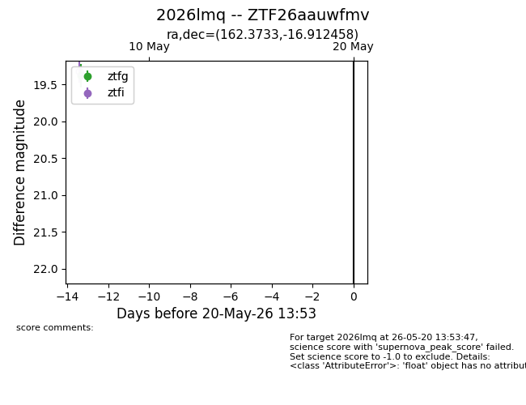
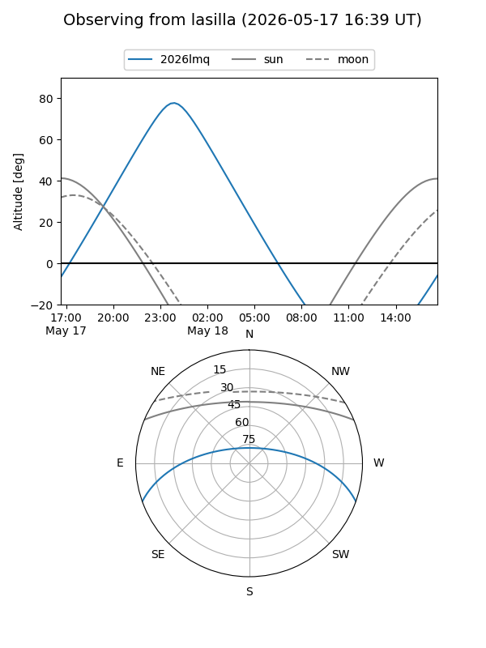
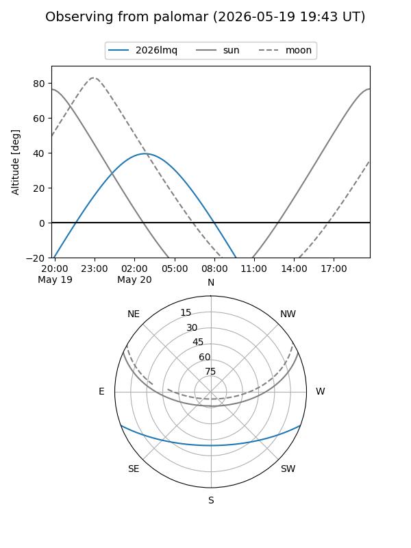

2026lmq
Target 2026lmq at 2026-05-20 14:00
Aliases and brokers:
FINK: link
Lasair: link
ALeRCE: link
TNS: link
YSE: link
alt names
ZTF26aauwfmv (ztf,fink_ztf)
2026lmq (tns,yse)
Coordinates:
equatorial (ra, dec) = 162.3733,-16.91246
equatorial (HMS+DMS) = 10:49:29.60,-16:54:44.85
galactic (l, b) = (265.5317,+36.95075)
Flags:
Photometry:
last ztfg=19.38
1 ztfg detections
Lightcurve

Visibility


Additional plots